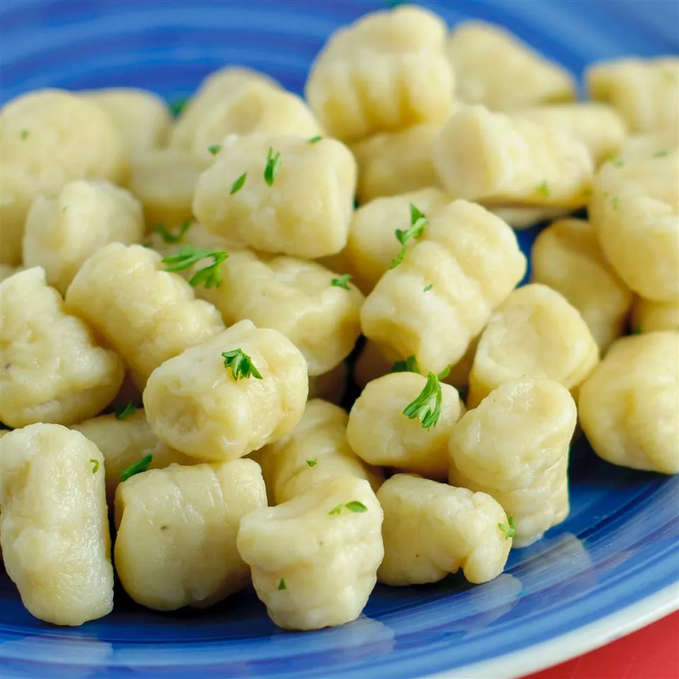

Description
This simple potato, flour, and egg recipe is one my family has used for generations.
Ingredients
- 2 potatoes
- 2 cups all-purpose flour
- 1 egg
Directions
-
Bring a large pot of salted water to a boil. Peel potatoes and add to pot. Cook
until tender but still firm, about 15 minutes. Drain, cool and mash with a fork or potato masher.
-
Combine 1 cup mashed potato, flour and egg in a large bowl. Knead until dough
forms a ball. Shape small portions of the dough into long "snakes". On a floured
surface, cut snakes into half-inch pieces.
-
Bring a large pot of lightly salted water to a boil. Drop in gnocchi and cook for 3
to 5 minutes or until gnocchi have risen to the top; drain and serve.
Back to top
Back to homepage